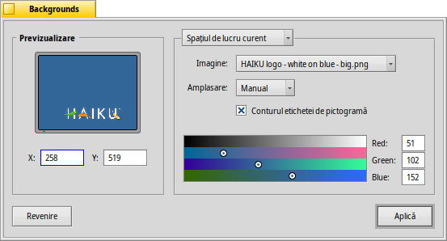

Backgrounds
Backgrounds
| Deskbar: | ||
| Locație: | /boot/system/preferences/Backgrounds | |
| Configurări: | ~/config/settings/system/app_server/workspaces ~/config/settings/Backgrounds settings - stochează poziția ferestrei panoului |
Puteți să stabiliți o culoare sau o imagine drept fundal pentru fiecare dosar și Desktop pentru fiecare spațiu de lucru.
Meniul de sus specifică dacă modificările sunt aplicate doar spațiului de lucru curent, tuturor spațiilor de lucru, unui dosar specific sau ca implicit pentru fiecare dosar nou.
Mai jos de asta puteți desemna o imagine sau selecta dacă doriți doar un fundal colorat. Imaginile pot fi de asemenea trase & plasate pe previzualizarea din stânga.
Dacă utilizați o imagine, trebuie să vă decideți cu privire la plasare:
| vă lasă să specificați coordonatele. Puteți trage pictura în previzualizare la stânga sau să introduceți X și Y manual. | ||
| centrează pictura în mijlocul ecranului | ||
| mărește pictura fără a ține cont de aspectul acesteia până când umple ecranul. | ||
| umple ecranul prin repetarea picturii. |
Activarea plasează un contur fin în jurul etichetelor de iconițe.
Dacă textul efectiv al unei etichete de iconiță este negru sau alb depinde de configurarea selectorului de culoare. O culoare închisă stabilește textul la alb o culoare deschisă la negru. Deci, dacă desemnați o imagine foarte luminoasă pentru fundal, va trebui de asemenea să stabiliți selectorul de culoare la o culoare luminoasă pentru a avea etichete de iconițe lizibile pe negru. (Sau utilizați opțiunea de contur de mai sus.)
Culoarea selectată este de asemenea reflectată în aplicația Workspaces, care ignoră imaginile ca fundaluri.
| aduce înapoi configurările care au fost active atuci când ați pornit preferințele Backgrounds. | ||
| stabilește modificările. |